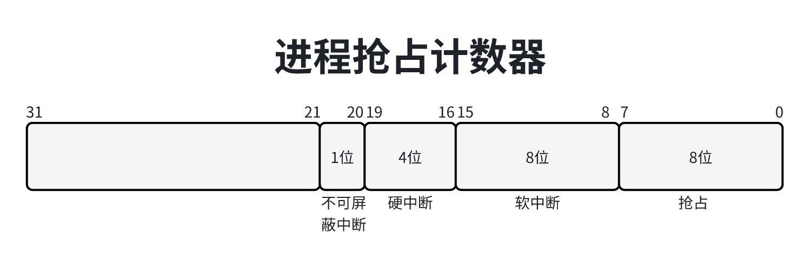
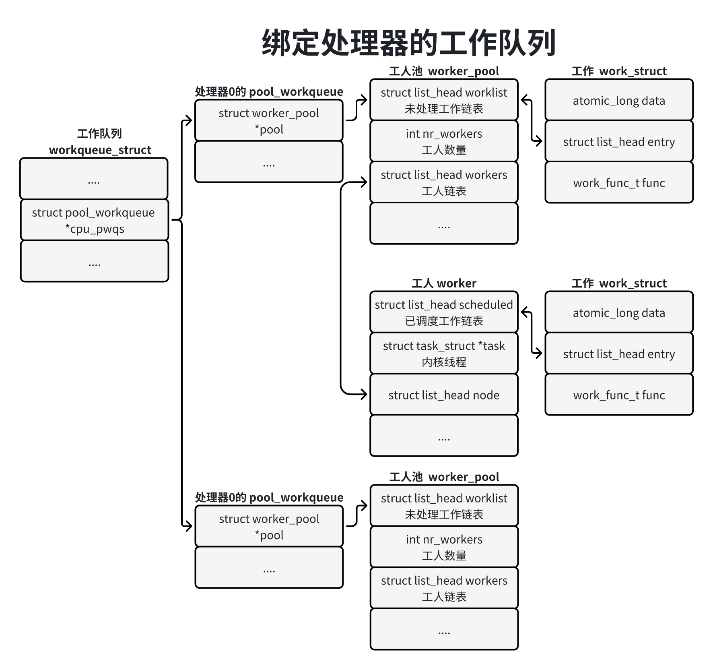
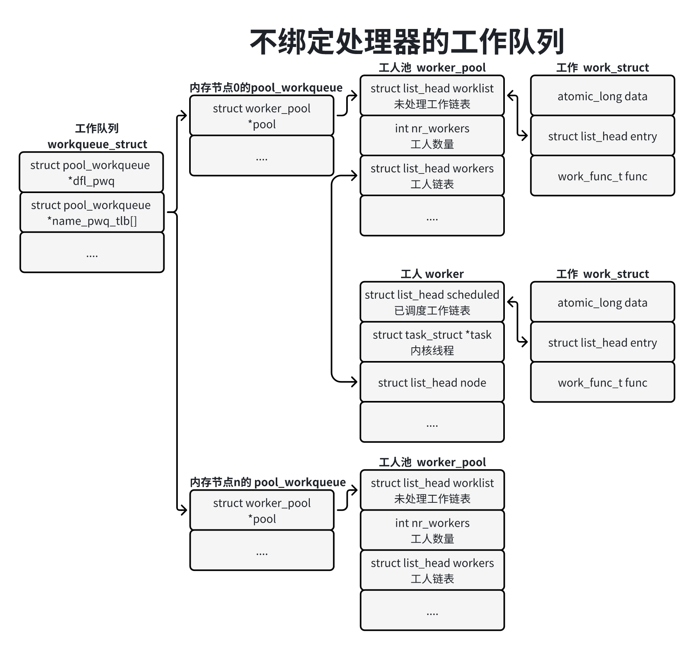

为了避免处理复杂的中断嵌套，终端处理程序实在关闭中断的情况下执行的。可是，如果关闭中断的时间太长，可能导致终端请求丢失。例如周期时钟每隔10毫秒发送一个中断请求，如果执行某个中断处理程序花费的时间超过10毫秒，在这段时间里时钟发送了2个中断请求，但是处理器只认为收到一个时钟中断请求。
最激进的解决办法是中断线程化，但是常用的解决办法是：把中断处理程序分为两部分，上半部分在关闭中断的请求下执行，只做对时间非常敏感、与硬件相关或不能被其他中断打断的工作；下半部在开启中断的情况下执行，可以被其他中断打断。
上半部称为硬中断（hardirq），下半部有3种：软中断（softirq）、小任务（tasklet）和工作队列（workequeue）。3种下半部的区别如下：
软中断和小任务不允许睡眠；工作队列使用内核线程实现的，处理函数可以睡眠。
软中断的种类是编译时静态定义的，在运行时不能添加或删除；小任务可以在运行时添加或删除。
同一种软中断的处理函数可以在多个处理器上同时执行，处理函数必须是可以重入的，需要使用锁保护临界区；一个小任务同一时刻只能在一个处理器上执行，不要求处理函数是可以重入的。
软中断（softirq）是中断处理程序在开启中断的情况下执行的部分，可以被硬中断抢占。
内核定义了一个软中断向量表，每种软中断有一个唯一的编号，对应一个softirq_action实例，softirq_action实例的成员action是处理函数：
x1// 位置：kernel/softirq.c2
3static struct softirq_action softirq_vec[NR_SOFTIRQS] __cacheline_aligned_in_smp;4
5// 位置：include/linux/interrupt.h6struct softirq_action7{8 void(*action)(struct softirq_action *);9};目前内核定义了10种软中断，各种中断的编号如下：
271// 位置：include/linux/interrupt.h2
3enum{4 // 高优先级的小任务5 HI_SOFTIRQ = 0,6 // 定时器软中断7 TIMER_SOFTIRQ,8 // 网络栈发送报文的软中断9 NET_TX_SOFTIRQ,10 // 网络栈接收报文的软中断11 NET_RX_SOFTIRQ,12 // 块设备中断13 BLOCK_SOFTIRQ,14 // 支持IO轮询的块设备软中断15 IEQ_POLL_SOFRIRQ,16 // 低优先级的小任务17 TASKLET_SOFTIRQ,18 // 调度软中断，用于处理器之前的负载均衡19 SCHED_SOFTIRQ,20 // 高精度定时器，这种软中断已经=废弃，目前这种软中断程序的上半部处理高精度定时器21 HRTIMER_SOFTIRQ, // 没有使用，但是保留，因为有些工具依赖这个编号22 // RCU软中断23 RCU_SOFTIRQ, // RCU软中断应该总是最后一个软中断24 25 NR_SOFTIRQS26 27};软中断的编号形成了优先级顺序，编号小的软中断优先级高。
函数open_softirq()用来注册软中断的处理函数，在软中断向量表中为指定的软中断编号设置处理函数。
61// 位置：kernel.softirq.c2
3void open_softirq(int nr, (*action)(struct softirq_action *))4{5 softirq_vec[nr].action = action;6}同一种软中断的处理函数可以在多个处理器上同时执行，处理函数必须是可以重入的，需要使用锁保护临界区。
函数rais_softirq用来触发软中断，参数是软中断编号。
11void raise_softirq(unsigned int nr);在已经禁止中断的情况下可以调用函数raise_softirq_irqoff来触发软中断。
11void raise_softirq_irqoff(unsigned int nr);函数raise_softirq在当前处理器的待处理软中断位图中为指定的额软中断编号设置对应的位，如下所示：
71// 调用链路：raise_softirq() -> raise_softirq_irqoff() -> __raise_softirq_irqoff()2// 位置：kernel/softirq.c3
4void __raise_softirq_irqoff(unsigned int nr)5{6 or_softirq_pending(1UL << nr);7}把宏or_sofr_pending展开以后是：
11irq_stat[smp_processor_id()].__soft_pending |=(1UL << nr);内核执行软中断的地方如下：
在中断处理程序的后半部分执行软中断，对执行时间有限制：不能超过2毫秒，并且最多执行10次。
每个处理器 有一个软中断线程，调度策略是SCHED_NORMAL，优先级是120。
开启软中断的函数local_bh_enable()。
如果开启了强制软中断线程化的配置宏CONFIG_IRQ_FORCED_THREADING，并未在引导内核的时候指定内核参数”threadirqs“，那么所有软中断由软中断线程执行。
在中断处理程序的后半部分，调用函数irq_exit()以退出中断上下文，处理软中断，代码如下：
101// 位置：kernel/softirq.c2
3void irq_exit(void)4{5 ...6 preempt_count_sub(HARDIRQ_OFFSET);7 if(!in_interrupt() && local_softirq_pending())8 invoke_softirq();9 ...10}如果in_interrupt()为true，表示在不可屏蔽中断、硬中断和中断上下文，或者禁止软中断。
如果正在处理的硬中断没有抢占正在执行的软中断，没有禁止软中断，并且当前处理器的待处理软中断位图不是空的，那么调用函数invoke_softirq()来处理软中断。
函数invoke_softirq代码如下：
161// 位置：kernel/softirq.c2
3static inline void invoke_softirq(void)4{5 // 如果软中断线程处于就绪状态或者运行状态，那么软中断线程执行软中断6 if(ksoftirq_running())7 return ;8 9 // 如果没有强制中断线程化，那么调用__do_softirq()执行软中断10 if(!force_irqthreads){11 __do_sofrirq();12 }else{13 // 如果强制中断线程化，那么唤醒软中断线程执行软中断14 wakeup_sofrirq();15 }16}函数__do_softirq是执行软中断的核心函数，代码如下：
711// 位置：kernel/softirq.c2
3
6
7asmlinkage __visible void __softirq_entry __do_softirq(void)8{9 unsigned long end = jiffies + MAX_SOFTIRQ_TIME;10 unsigned long old_flags = current->flags;11 int max_restart = MAX_SOFTIRQ_RESTART;12 struct softirq_action *h;13 bool in_hardirq;14 __u32 pending;15 int softirq_bit;16
17 current->flags &= ~PF_MEMALLOC;18
19 // 把局部变量pending设置为当前处理器的待处理软中断位图20 pending = local_softirq_pending();21 account_irq_enter_time(current);22
23 // 把抢占技术区的软中断计数加124 __local_bh_disable_ip(_RET_IP_, SOFTIRQ_OFFSET);25 in_hardirq = lockdep_softirq_start();26
27restart:28 // 把当前处理器的待处理器软中断位图重新设置为029 set_softirq_pending(0);30
31 // 开启硬中断32 local_irq_enable();33
34 h = softirq_vec;35
36 // 从低位向高位扫描待处理软中断位图，针对每个设置了对应位的软中断编号，执行软中断处理函数37 while ((softirq_bit = ffs(pending))) {38 ...39
40 h += softirq_bit - 1;41
42 ...43 44 h->action(h);45 ...46 h++;47 pending >>= softirq_bit;48 }49
50 rcu_bh_qs();51 // 禁止硬中断52 local_irq_disable();53
54 pending = local_softirq_pending();55 // 如果软中断的处理函数又触发软中断56 if (pending) {57 // 如果软中断的执行时间小于2毫秒，不需要重新调度进程，并且软中断的执行次数没超过1058 // 那么跳转到第19行代码继续zhixin软中断59 if (time_before(jiffies, end) && !need_resched() &&60 --max_restart)61 goto restart;62
63 // 唤醒软中断线程执行软中断64 wakeup_softirqd();65 }66
67 ...68 // 把抢占计数器的软中断计数减169 __local_bh_enable(SOFTIRQ_OFFSET);70 ...71}每个处理器有一个软中断线程，名称是“ksoftirqd/”后面跟着处理器编号，调度策略是SCHED_NORMAL，优先级是120。
软中断线程的核心是run_ksoftirqd()代码如下：
131// 位置：kernel/softirq.c2
3static void run_ksoftirqd(unsigned int cpu)4{5 local_irq_disable();6 if(local_softirq()){7 __do_softirq();8 local_irqa_enable();9 ...10 return ;11 }12 local_irq_enable();13}当进程调用函数local_bh_enable()开启软中断的时候，如果是开启最外层的软中断，并且当前处理器的待处理软中断位图不是空的，那么执行软中断。
141// 调用链路：local_bh_enable() -> __local_bh_enable_ip()2// 位置：kernel./softirq.c3
4void __local_bh_enable_ip(unsigned long ip, unsigned int cnt)5{6 ...7 preempt_count_sun(cnt - 1);8 if(unlikely(!in_interrupt() && local_softirq_pending())){9 do_softirq();10 }11 12 preempt_count_dec();13 ...14}每个进程的thread_info结构体有一个抢占计数器：int preempt_count，它用来表示当前进程能不能被抢占。
抢占是指当进程在内核模式下运行的时候可以被其他进程抢占，如果优先级更高的进程醋鱼就绪状态，强行剥夺当前进程的处理使用权。
但是有时候进程肯呢个在执行一些关键操作，不能被抢占，所以内核设计了抢占计数器。如果抢占计数器是否为0。如果抢占技术区是0，可以让优先级更高的进程抢占当前进程。
虽然抢占计数器不是0意味着禁止抢占，但是内核进一步按照各种场景对抢占计数器的位进行了划分，如下图所示：

其中第0~7位是抢占计数，第8~15位是软中断计数，第16~19位是硬中断计数，第20位是不可屏蔽中断（Non Maskable Interrupt NMI）计数。
121// 位置：include/linux/preempt.h2
3/**4 * PREEMPT_MASK： 0x000000ff5 * SOFTIRQ_MASK： 0x0000ff006 * HARDIRQ_MASK： 0x00f000007 * NMA_MASK： 0x001000008 */9各种场景分别利用各自的位禁止或开启抢占。
1）普通场景（PREEMPT_MASK）：对应函数preempt_disable()和preempt_enable()。
2）软中断场景（SOFTIRQ_MASK）：对应函数local_bh_disable()和local_bh_enable。
3）硬中断场景（HARDIRQ_MASK）：对应函数irq_enter()和irq_exit()。
4）不可屏蔽常见（NMI_MASK）：对应函数nmi_enter()和nmi_exit()。
反过来，我们可以通过抢占计数器的值判断当前处在什么场景：
211// 位置：include/linux/preempt.h2
3// 表示硬中断场景，也就是正在执行硬中断4// 软中断场景，包括禁止软中断和正在执行软中断6// 表示正在限制性不可屏蔽中断、硬中断或软中断，或者禁止软中断8// 表示正在执行软中断10// 表示不可屏蔽中断场景12// 表示普通场景，也就是进程上下文14 16
17
18 如果进程和软中断可能访问已给对象，那么进程和软中断需要互斥，进程需要禁止软中断。
禁止软中断的函数是local_bh_disable()，注意，这个函数只能禁止本处理器的软中断，不能禁止其他处理器的软中断。该函数把抢占计数器的软中断计数加2，代码如下：
151// 位置：include/linux/bootm_half.h2
3static inline void local_bn_disable(void)4{5 __local_bh_disable_ip(_THIS_IP_, SOFTRQ_DISABLE_OFFSET);6}7
8static __always_inline void __local_bh_disable_ip(unsigned long ip, unsigned int cnt)9{10 preempt_count_add(cnt);11 barrier();12}13
14// 位置： include/linux/preempt.h15开启软中断的函数是local_bh_enable()，该函数把抢占计数器的软中断计数减2。
为什么禁止软中断的函数local_bh_disable()把抢占计数器的软中断计数加2，而不是加1呢？
目的是区分禁止软中断和正在执行软中断这两种情况：执行软中断函数__do_sofrirq()把抢占计数器软中断计数加1。如果软中断计数是奇数，可以确定正在执行软中断。
小任务（tasklet）是基于软中断实现的，为什么日工小任务？因为小任务相对软中断有以下优势：
1）软中断的种类是编译时静态定义的，在运行时不能添加或删除，小任务可以在运行时添加或删除。
2）同一种软中断的处理函数可以在多个处理器上同时执行，处理函数必须是可以重入的，需要使用锁保护临界区；小任务同一时刻只能在一个处理器上执行，不要求处理函数是否可以重入。
小任务根据优先级分为两种：低优先级小任务和高优先级小任务。
小任务的数据结构如下：
181// 位置：inlcude/linux/interrupt.h2
3struct tasklet_struct 4{5 // 用来把小任务添加单向链表中6 struct tasklet_struct *next;7 // 是小任务的状态，取值如下8 // 0：表示小任务没有被调度9 // 1<< TASKLET_STATE_SCHED：小任务被调度被执行10 // 1<< TASKLET_STATE_RUN：只在多处理器系统中使用，表示小任务正在执行11 unsigned long state;12 // 计数，0表示小任务正在被执行，非0表示禁止小任务被执行13 atomic_t count;14 // 处理函数15 void (*func)(unsigned long);16 // 传给处理函数的参数17 unsigned long data;18}每个处理器有两条单向链表：优先级小任务链表和高优先级小任务链表。
91// 位置：kernel/sofrirq.c2
3struct tasklet_head {4 struct tasklet_struct *head;5 struct tasklet_struct **tail;6};7
8static DEFINE_PER_CPU(struct tasklet_head, tasklet_vec);9static DEFINE_PER_CPU(struct tasklet_head, tasklet_hi_vec);定义一个静态小任务，并且允许小任务被执行：
11DECLARE_TASKLET(name , func, data)定义一个静态的小任务，并且禁止小任务被执行，方法如下：
11DECLARE_TASKLET_DISABLED(name, func, data)在运行时动态初化小任务，并且允许小任务被执行，方法如下：
11void tasklet_init(struct tasklet_struct *t , void (*func)(unsigned long), unsigned long data);函数tasklet_disable()用来禁止小任务被执行，如果小任务正在被执行，该函数等待小任务执行完。
11void tasklet_disable(struct tasklet_struct *t);函数tasklet_disbale_nosync()用来禁止小任务被执行，如果小任务正在被执行，该函数不会等待小任务执行完。
11void tasklet_disable_nosync(struct tasklet_struct *t);函数tasklet_enable()用来允许小任务被执行。
11void tasklet_enable(struct tasklet_struct *t);函数tasklet_schedule()用来调度低优先级小任务：把小任务添加到当前处理器优先级小任务链表中，并且触发低优先级任务终中断。
11void tasklet_schedule(struct tasklet_struct *t);函数tasklet_hi_schedule()用来调度高优先级小任务：把小任务添加到当前处理器的高优先级小任务链表的尾部，并且触发高优先级小任务软中断。
11void tasklet_hi_schedule(struct tasklet_struct *t);函数tasklet_hi_schedule_first()用来调度高优先级小任务：把小任务添加到当前处理器的高优先级小任务链表的首部，并且触发高优先级小任务软中断。
11void tasklet_hi_schedule_first(struct tasklet_struct *t);函数tasklet_kill()用来杀死小任务，确保小任务不会被调度和执行。如果小任务正在被执行，该函数等待小任务执行完。通常在卸载内核模块的时候调用该函数。
11void tasklet_kill(struct tasklet_steuct *t);小任务是基于软中断实现的，根据优先级分为两种：低优先级小任务和高优先级小任务。软中断TASKLET_SOFTITQ执行低优先级小任务。
函数tasklet_schedule()用来调度低优先级小任务，函数taskelet_hi_schedule()用来调度高优先级小任务。以函数tasklet_schedule()为例说明，代码如下：
181// 位置：include/linux/interrupt.h2static inline tasklet_schedule(struct taskelet_struct *t)3{4 if(!test_and_set_bit(TASKLET_STATE_SCHED , &t -> state))5 __tasklet_schedule(t);6}7
8// 位置：kernel/softirq.c9void __tasklet_schedule(struct tasklet_struct *t)10{11 unsigned long flags;12 local_irq_save(flags);13 t->next=NULL;14 *__this_cpu_read(tasklet_vec.tail) = t;15 __this_cpu_write(tasklet_vec.tail, &(t->next));16 raise_softirq_irqoff(TASKLET_SOFTIRQ);17 local_irq_restore(flags);18}如果小任务没有被调度过，那么首先设置调度标志位， 然后把小任务添加到当前处理器的第优先级小任务链表的尾部，最后触发软职能端TASKLET_SOFRIRQ。
初始化的时候，把软终端TASKLET_SOFTIRQ的处理函数注册为函数tasklet_action，把软中断HI_SOFTIRQ的处理函数注册为函数tasklet_hi_action。
81// 位置：kernel/sofrirq.c2
3void __init sofrirq_init(void)4{5 ...6 open_softirq(TASKLET_SOFTIRQ, tasklet_action);7 open_softirq(HI_SOFTIRQ, tasklet_hi_action);8}以函数tasklet_action()为例说明，代码如下：
471// 位置：kernel/sofrirq.c2
3static __latent_entropy void tasklet_action(struct softirq_action *a)4{5 struct tasklet_struct *list;6
7 local_irq_disable();8 // 把当前处理器的低优先级小任务链表重点额所有小任务移到临时链表list中9 list = __this_cpu_read(tasklet_vec.head);10 __this_cpu_write(tasklet_vec.head, NULL);11 __this_cpu_write(tasklet_vec.tail, this_cpu_ptr(&tasklet_vec.head));12 local_irq_enable();13
14 // 遍历临时链表list，依次处理每个小任务15 while (list) {16 struct tasklet_struct *t = list;17
18 list = list->next;19
20 // 尝试锁住小任务，确保一个小任务同一时刻只在一个处理器上执行21 if (tasklet_trylock(t)) {22 // 如果小任务的计数位0，表示允许小任务被执行23 if (!atomic_read(&t->count)) {24 // 清除小任务的调度标志位，其他处理器可以调度这个小任务，但是不能执行这个小任务25 if (!test_and_clear_bit(TASKLET_STATE_SCHED,26 &t->state))27 BUG();28 // 执行小任务的处理函数29 t->func(t->data);30 // 释放小任务的锁，其他处理就可以执行这个小任务了31 tasklet_unlock(t);32 continue;33 }34 tasklet_unlock(t);35 }36
37 local_irq_disable();38 // 如果尝试所属组小任务失败（表示小任务正在被其他处理上执行）39 // 或者禁止小任务被执行，那么把小任务重新添加到当前处理器的低优先级小任务链表的尾部40 // 然后触发软中断TASKLET_SQFTIRQ41 t->next = NULL;42 *__this_cpu_read(tasklet_vec.tail) = t;43 __this_cpu_write(tasklet_vec.tail, &(t->next));44 __raise_softirq_irqoff(TASKLET_SOFTIRQ);45 local_irq_enable();46 }47}工作队列（work queue）是使用内核线程异步执行函数的通用机制。
工作队列是中段尿处理程序的一种下半部机制，中断处理程序可以把耗时比较长并且可能睡眠的函数交给工作队列执行。
工作队列不完全是中断处理程序的下半部。内核的很多模块需要异步执行函数，这些模块可以创建一个内核线程来异步执行函数。但是，如果每个模块都创建自己的内核线程，会造成线程的数量过多，内核消耗比较大，影响系统性能。所以，最好的方法是提供一种通用机制，让这些模块把需要异步执行的函数交给工作队列执行，共享内核线程，节省资源。
内核使用工作项保证需要异步执行的函数，工作项的数据类型是work_struct，需要异步执行的函数原型如下：
11typedef void (*work_func_t)(struct work_struct *work);有一类工作项称为延迟工作项，数据类型是delayed_work。把延迟工作项添加到工作队列的时候，延迟一段时间才会真正的把工作项添加到工作队列中。延迟工作项是工作项和定时器的结合，可以避免使用者自己创建定时器。
我们可以使用内核定义的工作队列，也可以自己创建专用的工作队列。内核定义了一下工作队列：
251// 位置：include/linux/workqueue.h2
3// 如果工作项的时间比较短，应该使用这个工作队列。早起的内核版本提供了这个工作队列，称为全局工作队列4// 函数schedule_work()和schedule_delayed_work()使用这个工作队列5extern struct workqueue_struct *system_wq;6
7// 高优先级的工作队列8extern struct workqueue_struct *syetem_highpri_wq;9
10// 如果工作项的执行时间比较长，应该使用这个工作队列。11extern struct workqueue_struct *system_long_wq;12
13// 这个工作多列的内核线程不绑定到某个特定的处理器14extern struct workqueue_struct *system_unbound_wq;15
16// 这个工作队列可以冻结17extern struct workqueue_struct *sysytem_freezable_wq;18
19// 如果开启了工作队列模式的参数”wq_power_effcient“那么这个工作队列倾向于省电，否则和system_wq相同20extern struct workqueue_struct *system_power_efficient_wq;21extern struct workqueue_struct *system_efficient_wq;22
23extern struct workqueue_struct *system_power_efficient_wq;24// 这个工作队列和system_power_effcient_wq的区别是可以冻结25extern struct workqueue_struct *system_freezable_power_efficient_wq;定义一个静态的工作项，参数n是变量名称，参数f是工作项的处理函数。
11DECLARE_WORK(n, f)定义一个静态的延迟工作项，参数n是变量名称，参数f是工作项的处理函数。
11DECLARE_DELAYED_WORK(n, f )使用DECLARE_DEFERRABLE_WORK(n,f)也可以定义一个静态的延迟工作项，和DECLARE_DELAYED_WORK()的去呗是它使用推迟的定时器（deferrable timer）。
可推迟的定时器在系统忙的时候工作正常，大师在处理器空闲的时候不会处理可推迟的定时器，当一个不可推迟的定时器唤醒处理器的时候，才会处理可推迟的定时器。
在运行状态初始化工作项，方法如下：
1）INIT_WORK(work, __func)：初始化一个工作项，参数_work是工作项的地址，参数_func是需要异步执行的函数。
2）INIT_WORK_ONSTACK(_work, _func)：初始化一个工作项 ，工作项是栈里面的局部变量，参数_work是工作项的地址，参数_func是需要异步执行的函数。
3）INIT_DELAYED_WORK(_work, _func)：初始化一个延迟工作项，参数_work是延迟工作项的地址，参数_func是需要异步执行的函数。
4）INIT_DELAYED_WORK_ONSTACK(_work, _func)：初始化一个延迟工作项，延迟工作项是栈里面的局部变量，参数_work是延迟工作项的地址，参数_func是需要异步执行的函数。
5）INIT_DEFERRABLKE_WORK(_work, _func)：初始化约个延迟工作项，延迟工作项是栈里面的局部变量，和INIT_DELAYED_WORK_ONSTACK()的区别是它使用可推迟的定时器。
6）INIT_DEFERRABKLE_WORK_ONSTACK(_work, _func)：初始化䘝延迟工作项，延迟工作项是栈里面的局部变量，和INIt_DELAYED_WORK_ONSTACK()的区别是它使用可推迟的定时器。
在全局工作队列中添加一个工作项。
11bool schdule_work(struct work_struct *work);在全局工作队列中添加一个工作项，并且指定执行工作项的处理器。
11bool schedule_work_on(int cpu, struct_struct *work);在全局工作队列中添加一个延迟工作项，参数delay是吧工作添加到工作队列中之前等待的时间，单位是嘀嗒(tick)。
11bool schedule_delayed_work(struct delayed_work *dwork, unsigned long delay);在全局工作队列中体=添加一个延迟工作项，并且指定执行工作项的处理器。
11bool schedule_delayed_work_on(int cpu, struct delayed_work *dwork, unsigned long delay);冲刷全局工作队列，确保全局工作队列中的所有工作执行完。
11void flush_scheduled_work(void);分配工作队列的函数是：
11alloc_workqueue(fmt, flags, max_active, args...)1）参数fmt：是工作队列名称的格式。
2）参数flags：标志位，可以是0，也可以是下面这些标志位的组合。
-> WQ_UNBOUND：处理工作项的内核线程不绑定到任何特定的处理器。
-> WQ_FREEZABLE：在系统挂起的时候冻结。
-> WQ_MEM_RECLAIM：在内核回收的时候可能使用这个工作队列。
-> WQ_HIFHPRI：高优先级。
-> WQ_CPU_INTENSIVE：处理器密集型。
-> WQ_POWER_EFFICIET：省电。
3）参数max_active：是每个处理器可以同时执行的工作项的最大数量，0表示默认值。
4）参数arge：传给参数fmt的参数。
下面的函数用来分配一个有序的工作队列。有序的工作队列在任何时刻，按照入队的顺序只执行一个工作项。
11alloc_ordered_workqueue(fmt, flags, args...)旧版本的创建队列的函数create_workqueue()、create_freezable_workqueue()和create_singlethread_workqueue()已经废弃。
在指定的工作队列中添加一个工作项。
11bool queue_work(struct workqueue_struct *wq, struct work_struct *work);在指定的工作队列中添加一个工作项，并且指定执行工作项的处理器。
11bool queue_work_on(int cpu, struct workqueue_struct *wq, struct work_struct *work);在指定的工作队列中添加一个延迟工作项，参数delay是把工作项添加到工作队列之前等待的时间，单位是嘀塔（tick）。
21 bool queue_delayed_work(struct workqueue_struct *wq, struct delatyed_work *dwork, 2 unsigned long delay);在指定的工作队列中添加一个延迟工作项，并且指定延迟工作项的处理器。
21bool queue_delayed_work_on(int cpum struct workqueue_struct *wq, 2 struct delayed_work *work, unsigned long delay);冲刷工作队列，确保工作多列的所有工作项执行完。
11void flush_workqueue(struct workqueue_struct *wq);销毁工作队列的函数：
11void destory_workqueue(struct workqueue_struct *wq);取消一个工作项。
11bool cancel_work(struct work_struct *work);取消一个工作项，并且等待取消操作执行完。
11bool cancel_work_sync(struct work_struct *work);取消一个延迟工作项。
11bool cancel_delayed_work(struct delayed_work *dwork);取消一个延迟工作项，并且等待取消操作执行完。
11bool cancel_delayed_work_sync(struct delayed_work *work);等待一个工作项完成。
11bool flush_work(struct work_struct *work);等待一个延迟工作项执行完。
11bool flush_delayed_work(struct delayed_work *dwork);介绍下工作队列中的使用术语：
work：工作，也称为工作项。
work queue：工作队列，就是工作的集合，work queue和work是一对多的关系。
worker：工人，一个工作对应一个内核线程，我们把工人对应的内核线程称为工人线程。
worker_pool：工人池，就是工人的集合，工人池和工人是一对多的关系。
pool_workqueue：中介，负责建立工作队列和工人池之间的关系。工作队列和pool_workqueue是一对多的关系，pool_workerqueue和工人池是一对一的关系。
工作队列分为两种。
1）绑定处理器的工作队列：默认创建绑定处理器的工作队列，每个工人线程绑定到一个处理器。
2）不绑定处理器的工作队列：创建工作队列的时候需要指定标志位WQ_UNBOUND，工人线程不绑定到某个处理器，可以在处理器之间迁移。
绑定处理器的工作队里的数据结构如下图所示，工作队列在每个处理器上有一个pool_workqueue实例，一个pool_workqueue实例对应一个工人池，一个工人池有一条工人链表，每个工人对应一个内核线程。向工作队列中添加共享项的时候，选择当前处理器的pool_workqueue实例、工人池和工人线程。

不绑定处理器的工作队列的数据结构如下图所示，工作队列在乜咯内存节点上有一个pool_workqueue实例，一个pool_workqueue实例对应一个工人池，一个工人池有一条工人链表，每个工人对应一个内核线程。向工作队列中添加工作项的时候，选择当前处理器的pool_workqueue实例、工人池和工人线程。

不绑定处理器的工作对垒还有一个默认的pool_workqueue实例（workqueue_struct.dfl_pwq），当某个处理器下线的时候，使用迷人的pool_workqueue实例。
工作项负责保存需要异步执行的函数，数据类型是work_struct，定义如下：
101// 位置：include/linux/workqueue.h2
3struct work_struct {4 // 5 atomic_long data;6 // 用来把工作项添加到链表中7 struct list_head entry;8 // 需要异步执行的函数，成员data是传给函数func的函数9 work_func_t func;10};延迟工作项是工作项和定时任务结合，数据类型是delayed_work。把延迟工作添加到工作队列中的时候，延迟一段时间才会真正把工作添加到工作队列中。
101// 位置：include/linux./workqueue.h2
3struct delayed_work{4 struct work_struct work;5 struct timer_list timer;6 7 // 定时器把工作项添加到工作队列时，需要知道目标工作队列和处理器8 struct workqueue_struct *wq;9 int cpu;10};函数queue_work()用来项工作队列中添加一个工作项，把主要工作委托给函数queue_work_on()，把第一个参数”int cpu“设置为WORK_CPU_UNBOUND，意思是不绑定到任何处理器，优先选择当前处理器。
61// 位置：inlucde/linux/workqueue.h2
3static inline bool queue_work(struct workqueue_struct *wq, 4 struct work_struct *work){5 return queue_work_on(WORK_CPU_UNBOUND, wq, work);6}函数queue_work_on的代码如下：
171// 位置：kernel/workqueue.c2
3bool queue_work_on(int cpu, struct workqueue_struct *wq, 4 struct work_struct *work)5{6 bool ret =false;7 unsigned long flags;8 local_irq_save(flags);9 10 if(!test_and_set_bit(WORK_STRUCT_PENDING_BIT, work_data_bits(work))){11 __queue_work(cpu, wq, work);12 ret = true;13 }14 15 local_irq_restore(flags);16 return ret;17}如果工作项没有添加过，那么给工作项想设置标志位WORK_STRUCT_PENDING_BIT，然后把主要工作委托给函数__queue_work()。
函数__queue_work()的代码如下：
901// 位置：kernel/workqueue.c2
3static void __queue_work(int cpu, struct workqueue_struct *wq,4 struct work_struct *work)5{6 struct pool_workqueue *pwq;7 struct worker_pool *last_pool;8 struct list_head *worklist;9 unsigned int work_flags;10 unsigned int req_cpu = cpu;11
12 WARN_ON_ONCE(!irqs_disabled());13
14 debug_work_activate(work);15
16 if (unlikely(wq->flags & __WQ_DRAINING) &&17 WARN_ON_ONCE(!is_chained_work(wq)))18 return;19retry:20 if (req_cpu == WORK_CPU_UNBOUND)21 cpu = wq_select_unbound_cpu(raw_smp_processor_id());22
23 // 从工作队列中选择pool_workqueue实例。如果是绑定处理器的工作队列，那么选择当钱处理器的pool_workqueue24 // 实例；如果是不绑定处理器的工作队列，那么选择当前处理器所属的内存节点的pool_workequeue实例25 if (!(wq->flags & WQ_UNBOUND))26 pwq = per_cpu_ptr(wq->cpu_pwqs, cpu);27 else28 pwq = unbound_pwq_by_node(wq, cpu_to_node(cpu));29
30 last_pool = get_work_pool(work);31 // 如果工作正在被其他pool_workqueue实例的工人执行，那么还是把工作添加到哪个pool_workqueue实例32 if (last_pool && last_pool != pwq->pool) {33 struct worker *worker;34
35 spin_lock(&last_pool->lock);36
37 worker = find_worker_executing_work(last_pool, work);38
39 if (worker && worker->current_pwq->wq == wq) {40 pwq = worker->current_pwq;41 } else {42 /* meh... not running there, queue here */43 spin_unlock(&last_pool->lock);44 spin_lock(&pwq->pool->lock);45 }46 } else {47 spin_lock(&pwq->pool->lock);48 }49
50 if (unlikely(!pwq->refcnt)) {51 if (wq->flags & WQ_UNBOUND) {52 spin_unlock(&pwq->pool->lock);53 cpu_relax();54 goto retry;55 }56 /* oops */57 WARN_ONCE(true, "workqueue: per-cpu pwq for %s on cpu%d has 0 refcnt",58 wq->name, cpu);59 }60
61 /* pwq determined, queue */62 trace_workqueue_queue_work(req_cpu, pwq, work);63
64 if (WARN_ON(!list_empty(&work->entry))) {65 spin_unlock(&pwq->pool->lock);66 return;67 }68
69 pwq->nr_in_flight[pwq->work_color]++;70 work_flags = work_color_to_flags(pwq->work_color);71
72 // 如果pool_workqueue实例的未处理工作数量小于限制，那么啊工作添加到pool_workqueue实例对应的工人池的链表73 // worklist中；如果pool_workqueue实例的未处理工作数量达到限制，那么给工作设置标志位WORK_STRUCT_DELAYED并且74 // 把工作添加到pool_workqueue实例的链表delayed_works中75 if (likely(pwq->nr_active < pwq->max_active)) {76 trace_workqueue_activate_work(work);77 pwq->nr_active++;78 worklist = &pwq->pool->worklist;79 if (list_empty(worklist))80 pwq->pool->watchdog_ts = jiffies;81 } else {82 work_flags |= WORK_STRUCT_DELAYED;83 worklist = &pwq->delayed_works;84 }85
86 // 把工作添加到选择的链表中87 insert_work(pwq, work, worklist, work_flags);88
89 spin_unlock(&pwq->pool->lock);90}每个工人对应一个内核线程，一个工人池对应一个或多个工人。多个工人从工人池的未处理工作链表（worker_pool.worklist）中取工作并处理。
工人线程的处理函数是worker_thread()，调用函数process_one_work()处理一个工作项。
函数worker_thread()的代码如下：
741// 位置：kernel/workqueue.c2
3static int worker_thread(void *__worker)4{5 struct worker *worker = __worker;6 struct worker_pool *pool = worker->pool;7 // 告诉进程调度器这是一个工作队列的工人线程8 worker->task->flags |= PF_WQ_WORKER;9woke_up:10 spin_lock_irq(&pool->lock);11
12 // 如果工人太多，想要减少工人的数量，哪呢当前工人线程退出13 if (unlikely(worker->flags & WORKER_DIE)) {14 spin_unlock_irq(&pool->lock);15 WARN_ON_ONCE(!list_empty(&worker->entry));16 worker->task->flags &= ~PF_WQ_WORKER;17
18 set_task_comm(worker->task, "kworker/dying");19 ida_simple_remove(&pool->worker_ida, worker->id);20 worker_detach_from_pool(worker, pool);21 kfree(worker);22 return 0;23 }24
25 //工人退出空闲状态26 worker_leave_idle(worker);27recheck:28
29 // 如果不需要本工人执行工作，那么本工人进入空闲状态30 if (!need_more_worker(pool))31 goto sleep;32
33 // 如果工人池中没有空闲的工人，那么创建一些工人备用34 if (unlikely(!may_start_working(pool)) && manage_workers(worker))35 goto recheck;36
37 WARN_ON_ONCE(!list_empty(&worker->scheduled));38
39
40 worker_clr_flags(worker, WORKER_PREP | WORKER_REBOUND);41
42 do {43 // 从工人池的链表worklist中取一个工作44 struct work_struct *work =45 list_first_entry(&pool->worklist,46 struct work_struct, entry);47
48 pool->watchdog_ts = jiffies;49
50 // 如果是正常工作那么调用函数process_onw_work()执行正常工作，然后执行工人的链表51 // schedule中的特殊工作52 if (likely(!(*work_data_bits(work) & WORK_STRUCT_LINKED))) {53 process_one_work(worker, work);54 if (unlikely(!list_empty(&worker->scheduled)))55 process_scheduled_works(worker);56 } else {57 // 如果是特殊工作，那么首先把工作添加到工人的链表scheduled的尾部，然后执行工人的链表schedule中的特殊工作58 move_linked_works(work, &worker->scheduled, NULL);59 process_scheduled_works(worker);60 }61
62 // 如果有工作需要处理，兵器处于运行状态工人数量不超过1，那么本工人继续执行工作63 } while (keep_working(pool));64
65 worker_set_flags(worker, WORKER_PREP);66sleep:67
68 // 工人进入空闲状态，睡眠69 worker_enter_idle(worker);70 __set_current_state(TASK_INTERRUPTIBLE);71 spin_unlock_irq(&pool->lock);72 schedule();73 goto woke_up;74}下面解释一下正常工作和特殊工作。
向工作队列中添加正常工作，是直接添加到工人池的链表worklist中。
调用函数flush_work(t)等待工作t执行完，实现方法是添加一个特殊工作：屏障工作，纸吸管这个屏障工作的时候皆可以确定工作t执行完。如果工作t正在被工人p执行，那么把屏障工作直接添加到工人p的链表schedule中；如果工作t没有执行，那么把屏障工作添加到工人池的链表worklist中，并且给屏障工作设置标志位WORK_STRUCT_LINKED。
函数process_one_work()负责处理一个工作，代码如下：
781// 位置：kernel/workque.c2
3static void process_one_work(struct worker *worker, struct work_struct *work)4__releases(&pool->lock)5__acquires(&pool->lock)6{7 struct pool_workqueue *pwq = get_work_pwq(work);8 struct worker_pool *pool = worker->pool;9 bool cpu_intensive = pwq->wq->flags & WQ_CPU_INTENSIVE;10 int work_color;11 struct worker *collision;12
14 struct lockdep_map lockdep_map;15
16 lockdep_copy_map(&lockdep_map, &work->lockdep_map);17
19 WARN_ON_ONCE(!(pool->flags & POOL_DISASSOCIATED) &&20 raw_smp_processor_id() != pool->cpu);21
22 // 一个工作不应该被多个工人并发执行。如果一个工作正在被工人池的其他工人执行，那么把这个工作添加到这个工人的23 // 链表scheduled中延后执行24 collision = find_worker_executing_work(pool, work);25 if (unlikely(collision)) {26 move_linked_works(work, &collision->scheduled, NULL);27 return;28 }29
30 debug_work_deactivate(work);31 32 // 把工人添加到工人池的散列表busy_hash中33 hash_add(pool->busy_hash, &worker->hentry, (unsigned long)work);34 // 工人的成员current_work指向当前工作，成员current_func执行当前工作的的处理函数35 // 成员current_qwq指向当前pool_workqueue实例36 worker->current_work = work;37 worker->current_func = work->func;38 worker->current_pwq = pwq;39 work_color = get_work_color(work);40
41 list_del_init(&work->entry);42
43
44 // 如果工作队列是处理器密集型的，那个给工人设置标志位WORKER_CPU_INTENSIVE，工人不在被工人池动态调度45 if (unlikely(cpu_intensive))46 worker_set_flags(worker, WORKER_CPU_INTENSIVE);47
48 // 对于不绑定处理器或处理密集型的工作队列，唤醒更多空闲的工人处理工作49 if (need_more_worker(pool))50 wake_up_worker(pool);51
52
53 set_work_pool_and_clear_pending(work, pool->id);54
55 spin_unlock_irq(&pool->lock);56
57 lock_map_acquire_read(&pwq->wq->lockdep_map);58 lock_map_acquire(&lockdep_map);59 trace_workqueue_execute_start(work);60 // 执行工作的处理函数61 worker->current_func(work);62 ...63
64
65 cond_resched_rcu_qs();66
67 spin_lock_irq(&pool->lock);68
69 if (unlikely(cpu_intensive))70 worker_clr_flags(worker, WORKER_CPU_INTENSIVE);71
72 hash_del(&worker->hentry);73 worker->current_work = NULL;74 worker->current_func = NULL;75 worker->current_pwq = NULL;76 worker->desc_valid = false;77 pwq_dec_nr_in_flight(pwq, work_color);78}工人池可以动态增加和删除工人，算法如下：
1）工人有3种状态：空闲（idle）、运行（running）、挂起（suspend）更像是指没有执行工作，运行是指正在执行工作需要处理，至少保持一个处在运行状态的工人来处理。
2）如果工人池中有工作需要处理，至少保持一个处在运行状态的工人来处理。
3）如果处在运行状态的工人正在执行工作的过程中进入挂起状态，为了保证其他工作的执行，需要唤醒空闲的工人处理工作。
4）如果工作需要执行，并且处在运行转台的工人数量大于1，会让多余的工人进入空闲状态。
5）如果没有工作需要执行，会让所有工人进入空闲状态。
6）如果创建的工人过多，工人池把空闲时间超过300秒（IDLE_WORKER_TIMEOUT）的工人删除。
为了跟踪工人的运行和挂起状态、动态调整工人的数量，工作队列使用进程调度中钩子函数的技巧。
1）跟踪工人从挂起进入运行状态。唤醒工人线程的时候，如果工人线程正在执行工作的额过程中，那么把工人池中处在运行状态的工人计数（nr_running）加1。相关代码：
121// 调用链路：try_to_wake_up() -> ttwu-queue() -> ttwu_do_activate() -> wq_worker_waking_up()2// 位置：kernel/workqueue.c3
4void wq_worker_waking_up(struct task_struct *task, int cpu)5{6 struct worker *worker = kthread_data(task);7
8 if (!(worker->flags & WORKER_NOT_RUNNING)) {9 WARN_ON_ONCE(worker->pool->cpu != cpu);10 atomic_inc(&worker->pool->nr_running);11 }12} 2）跟踪工人从运行进入挂起状态。当一个工人睡眠的时候，如果工人池没有工人处于运行状态，并且工人池有工作需要执行，那么唤醒一个空闲的工人。代码如下：
211// 调用链路：__schedule() -> wq_worker_sleeping()2// 位置：kernel/workqueue.c3
4struct task_struct *wq_worker_sleeping(struct task_struct *task)5{6 struct worker *worker = kthread_data(task), *to_wakeup = NULL;7 struct worker_pool *pool;8
9 if (worker->flags & WORKER_NOT_RUNNING)10 return NULL;11
12 pool = worker->pool;13
14 if (WARN_ON_ONCE(pool->cpu != raw_smp_processor_id()))15 return NULL;16
17 if (atomic_dec_and_test(&pool->nr_running) &&18 !list_empty(&pool->worklist))19 to_wakeup = first_idle_worker(pool);20 return to_wakeup ? to_wakeup->task : NULL;21}工人池的调度思想是如果有工作需要处理，保持一个处在运行状态的工人来处理，不多页不少。
这种做法有个问题：如果工作时处理器密集型的，虽然工人没有进入挂起状态，但是会长时间占用处理器，让后续的工作阻塞太长时间。
为了解决这个问题，可以在创建工作对垒的时候设置标志位WQ_CPU_INTENSIVE，圣经工作对垒是处理器密集型的，当一个工人执行工作的时候，让这个工人不受工人池动态调度，像是进入了挂起状态，工人池创建新的工人来执行后续的工作。
工人线程对处理器密集型的特出处理如下：
791// 调用链路：worker_thread() -> process_one_work()2// 位置：kernel/workqueue.c3
4tatic void process_one_work(struct worker *worker, struct work_struct *work)5__releases(&pool->lock)6__acquires(&pool->lock)7{8 struct pool_workqueue *pwq = get_work_pwq(work);9 struct worker_pool *pool = worker->pool;10 bool cpu_intensive = pwq->wq->flags & WQ_CPU_INTENSIVE;11 int work_color;12 struct worker *collision;13
15 struct lockdep_map lockdep_map;16
17 lockdep_copy_map(&lockdep_map, &work->lockdep_map);18 WARN_ON_ONCE(!(pool->flags & POOL_DISASSOCIATED) &&20 raw_smp_processor_id() != pool->cpu);21
22 collision = find_worker_executing_work(pool, work);23 if (unlikely(collision)) {24 move_linked_works(work, &collision->scheduled, NULL);25 return;26 }27
28 debug_work_deactivate(work);29 hash_add(pool->busy_hash, &worker->hentry, (unsigned long)work);30 worker->current_work = work;31 worker->current_func = work->func;32 worker->current_pwq = pwq;33 work_color = get_work_color(work);34
35 list_del_init(&work->entry);36
37
38 if (unlikely(cpu_intensive))39 worker_set_flags(worker, WORKER_CPU_INTENSIVE);40
41 if (need_more_worker(pool))42 wake_up_worker(pool);43
44 set_work_pool_and_clear_pending(work, pool->id);45
46 spin_unlock_irq(&pool->lock);47
48 lock_map_acquire_read(&pwq->wq->lockdep_map);49 lock_map_acquire(&lockdep_map);50 trace_workqueue_execute_start(work);51 worker->current_func(work);52
53 trace_workqueue_execute_end(work);54 lock_map_release(&lockdep_map);55 lock_map_release(&pwq->wq->lockdep_map);56
57 if (unlikely(in_atomic() || lockdep_depth(current) > 0)) {58 pr_err("BUG: workqueue leaked lock or atomic: %s/0x%08x/%d\n"59 " last function: %pf\n",60 current->comm, preempt_count(), task_pid_nr(current),61 worker->current_func);62 debug_show_held_locks(current);63 dump_stack();64 }65
66 cond_resched_rcu_qs();67
68 spin_lock_irq(&pool->lock);69
70 if (unlikely(cpu_intensive))71 worker_clr_flags(worker, WORKER_CPU_INTENSIVE);72
73 hash_del(&worker->hentry);74 worker->current_work = NULL;75 worker->current_func = NULL;76 worker->current_pwq = NULL;77 worker->desc_valid = false;78 pwq_dec_nr_in_flight(pwq, work_color);79}可以看到，给工人设置标志位WORKER_CPU_INTENSIVE的时候，把工人池的计数nr_running减1，相当与工人进入挂起状态。